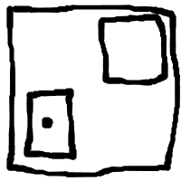

If you want to generate a DOOM map, you need to use a level editor and manually create the map, either from scratch, or from a template. Although this works well for most map creation scenarios, it would be nifty if maps could be generated programmatically. This would allow maps to be generated for Cougaar agent community visualization, or PMD problem visualization, or from a floor plan.
Here's the project page and the code and unit tests.
Here's an example of what I'd like to be able to do:
level = Level.new(10,10)
level.add(Sector.new(1,1,8,8))
level.spawn_point(3,3)
m = Map.new(level)
m.write_to_file("simple.wad")
|
<====> |  |
Here's a sample run from the current version of doom.rb:
[tom@rubyforge ruby]$ ./doom.rb -v Reading WAD into memory Done reading, building the object model Created MAP01 Created THINGS Created LINEDEFS Created SIDEDEFS Created VERTEXES Created SEGS Created SSECTORS Created NODES Created SECTORS Created REJECT Created BLOCKMAP Object model built The file ../../test_wads/simple.wad is a 900 byte PWAD It's got 11 lumps, the directory started at byte 724 MAP01 (0 bytes) THINGS (10 bytes) - Player 1 at (224,-416) facing east LINEDEFS (112 bytes) - Linedef from 0 to 1; attribute flag is 1; special fx is 0; tag is 0; right sidedef is 0; left sidedef is -1 - Linedef from 1 to 2; attribute flag is 1; special fx is 0; tag is 0; right sidedef is 1; left sidedef is -1 - Linedef from 2 to 3; attribute flag is 1; special fx is 0; tag is 0; right sidedef is 2; left sidedef is -1 - Linedef from 3 to 0; attribute flag is 1; special fx is 0; tag is 0; right sidedef is 3; left sidedef is -1 - Linedef from 4 to 5; attribute flag is 1; special fx is 0; tag is 0; right sidedef is 4; left sidedef is -1 - Linedef from 5 to 6; attribute flag is 1; special fx is 0; tag is 0; right sidedef is 5; left sidedef is -1 - Linedef from 6 to 7; attribute flag is 1; special fx is 0; tag is 0; right sidedef is 6; left sidedef is -1 - Linedef from 7 to 4; attribute flag is 1; special fx is 0; tag is 0; right sidedef is 7; left sidedef is -1 SIDEDEFS (240 bytes) - Sidedef for sector 0 - Sidedef for sector 0 - Sidedef for sector 0 - Sidedef for sector 0 - Sidedef for sector 1 - Sidedef for sector 1 - Sidedef for sector 1 - Sidedef for sector 1 VERTEXES (32 bytes) - Vertex at (64,-320) - Vertex at (384,-320) - Vertex at (384,-512) - Vertex at (64,-512) - Vertex at (640,-320) - Vertex at (896,-320) - Vertex at (896,-512) - Vertex at (640,-512) SEGS (96 bytes) SSECTORS (8 bytes) NODES (28 bytes) SECTORS (52 bytes) - Sector floor/ceiling heights 0/128; floor/ceiling textures FLAT14/ - Sector floor/ceiling heights 0/128; floor/ceiling textures FLAT14/ REJECT (1 bytes) BLOCKMAP (132 bytes) Writing WAD Done
I'll try to document the wad file structure as I go. Props go out to the many folks out there who have figured out this stuff before I did. Hopefully I can summarize some of the important points here.
Header - a 12 byte sequence. 80, 87, 65, 68, 11, 0, 0, 0, 212, 2, 0, 0, 0
Directory entries - a series of 16 byte sequences. 13, 0, 0, 0, 10, 0, 0, 0, 84, 72, 73, 78, 71, 83, 0, 0
Lumps - a bunch of different kinds of data of variable length.
bytes.pack("C4").unpack("V")[0]
Also, I'm a bit of a dolt, so I had to do this to understand this byte packing order. 0 0 2 212 converted to binary is 00000000 00000000 00000010 11001010. So the 1 is in the 512 place, so 512 + 212 = 724.